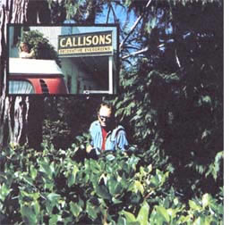

Brush picking-the gathering of sword fern, salal, and other forest greens for sale to florist-supply
housesprobably won't make you rich . . . but as a quick source of emergency cash in the Pacific Northwest,
says Marie Chillson, it can't be beat!
It's a long way from San Francisco to Canada and back in a Volkswagen . . . but my husband and I had saved for that vacation for ages and we were enjoying every minute of it. Enjoying the trip, that is, right up until the tooth I broke on a piece of chicken in an Oregon roadside diner suddenly-and unexpectedly-blew $100 right out of our travel funds.
"Oh well," Allen said, "we've looked forward to seeing Canada for so long that we can certainly wait a little longer. But we still have enough money to enjoy a leisurely drive back to San Francisco along the scenic coastal route."
Three hours later and a few miles short of Coos Bay, Oregonhowever-the Canadian vacation that had just slipped through our fingers was suddenly given back to us again . . . and by a most unexpected "Santa Claus".
We had just pulled into a rest area, only to be somewhat puzzled by a parked pickup piled high with . . . well, with what appeared to be green foliage of some kind. At first we thought the mass of limbs and leaves had been the end result of someone's roadside cleanup campaign. But no . . . the foliage was simply stacked too neatly and tied too carefully with twine for that.
"What the heck you got here anyway?" Allen asked the young man who-from behind a magnificent beard and beneath a wide-brimmed hat-was grinning out the pickup's window at us.
"I'm a brush picker," he replied. "I make my living picking sword fern, cedar, salal, and huckleberry foliage and selling it to packing plants in the area. The packers then grade and case the greenery and ship it to florists throughout the country for use in floral arrangements."
"Gee, can just anybody get in on this kind of work?"
"Yep," our new friend answered cheerily. "There's more than enough brush around here for everybody who wants to be a picker. And the packers! They're shipping tons of forest greens and they never seem to get enough. This is really big business . . . even though it's still a relatively unknown industry, even in these parts."
Our accommodating new acquaintance then went on to show us how an arrangement of salal (right off his truck) should be put togetherspray by spray, with odd single leaves tucked neatly in between-and gave us further tips about harvesting foliage as a business:
"As long as you don't take more than 25% of any one plant's foliage, you don't have to worry about hurtin' the shrubbery you pick from. Studies, in fact, have shown that this pruning is actually beneficial.
"Another thing: You're only wastin' your time when you pick more greenery than you can keep shaded on each load you haul in. Sunlight can wilt harvested foliage faster than you can imagine . . .and nobody wants to buy wilted salal or huckleberry.
"If you make sure your salal leaves aren't spotted before you pick'em, you'll find that a bundle weighing about a pound and a half will bring you 43d. Huckleberry, which is faster to gather, generally pays a nickel less. And if you're smart, you'll stick with those two items since it's tougher to make wages pickin' fern or cedar. But don't take my word for it . . . here are the names and addresses of some buyers you can talk to yourself."
With that, our benefactor was on his way . . . and we were headed for Callison's Decorative Evergreens in Coos Bay, where Plant Manager Robert Kallgren told us, "Sure. Always glad to have new pickers. As a matter of fact-assuming, of course, you stay off private property unless you have permission to be therethese sections right here and right here that I've outlined on this map of Coos County should be pretty good places for both of you to try your hands at the brush-picking trade."
Boy! Talk about being set up in business! Anyway-to make a long story shortAllen and 1 spent the next seven nights sleeping out under the stars, surrounded by giant firs and cedars. Mornings-after a leisurely breakfast prepared over a campfire-were devoted to the collection of salal and huckleberry foliage. And every afternoon found us loading the Chillson family van to the gunnels with the morning's harvest for a run into town . . . and those runs always netted us between $15 and $25 (not bad for begin. ners, we felt).
While it is true that stormy weather forced us to terminate this rather idyllic way of life a few days earlier than we'd anticipated, it's also true that we "quit the game" with 143 fresh new bucks in our pockets ($43 more than the episode with the tooth had cost). And that was enough to put us back on the road once again, headed north to Canada. The beautiful, bountiful woods of Oregon had saved our dream trip!
I had to agree with Allen when he said, "We really couldn't have `picked' a better spot for the first week of our vacation."
|
 PHOTOS BY MARIE AND ALLEN CHILLSON |
|
|